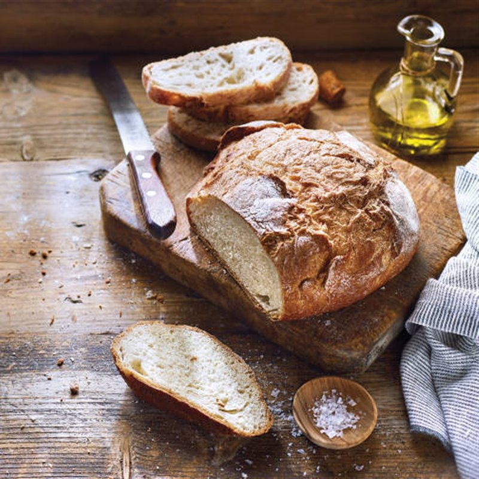

Pan casero

El pan
El origen del pan se remonta a la antigüedad, con evidencias de los primeros panes elaborados hace más de 30.000 años. Estos primeros “panes” probablemente consistían en granos molidos mezclados con agua y cocidos sobre piedras calientes o cenizas. Sin embargo, el pan como se lo conoce hoy, esponjoso y fermentado, comenzó a tomar forma alrededor del 6000 a.C. en Egipto.
Los egipcios descubrieron que, al dejar reposar accidentalmente una masa de harina y agua, fermentaba debido a las levaduras presentes en el ambiente y resultaba en un pan más ligero y sabroso una vez horneado.
Inrgedientes
- 1 kg de harina
- 1 sobre de levadura seca rápida (10 gramos), que reduce tiempo de fermentación
- 1 cucharada de sal
- 1 cucharada de azúcar
- 2 cucharadas de aceite
- Agua tibia cantidad necesaria (aproximadamente 500 ml, ajustar según sea necesario)
Preparación
- En un bol grande, mezcla la harina con la sal.
- Disuelve el azúcar y la levadura seca rápida en un poco de agua tibia. Espera unos 5 minutos hasta que la mezcla comience a espumar, indicando que la levadura está activa.
- Haz un hueco en el centro de la mezcla de harina y añade la mezcla de levadura espumosa, junto con las 2 cucharadas de aceite
- Comienza a mezclar, agregando gradualmente el resto del agua tibia hasta formar una masa suave que no se pegue a las manos. Es posible que no necesites usar toda el agua o que necesites un poco más, dependiendo de la absorción de la harina.
- Amasa la masa sobre una superficie ligeramente enharinada durante unos 5 a 10 minutos, hasta que esté suave y elástica.
- Coloca la masa en un bol ligeramente aceitado, cubre con un paño húmedo y deja reposar en un lugar cálido por aproximadamente 30 minutos, o hasta que haya duplicado su tamaño.
- Una vez que la masa ha crecido, divide y forma los panes según tu preferencia. Colócalos en una bandeja de horno preparada.
- Deja reposar los panes formados por unos 10-15 minutos mientras precalientas el horno a una temperatura media-alta (aproximadamente 220°C).
- Hornea por unos 20-25 minutos o hasta que los panes estén dorados y suenen huecos al golpearlos suavemente en la base.
Regresar